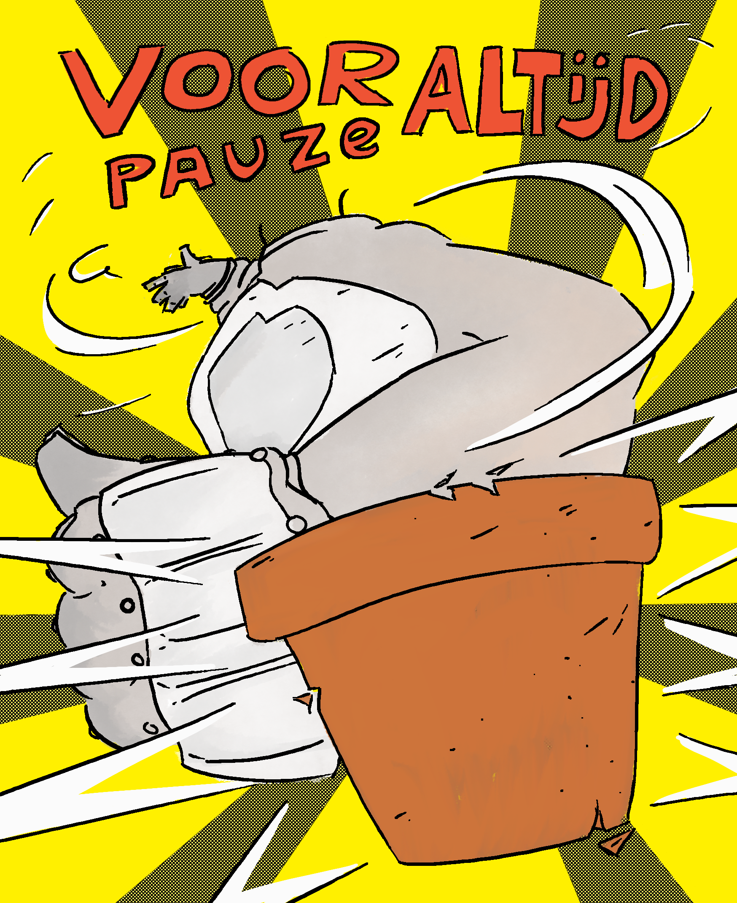
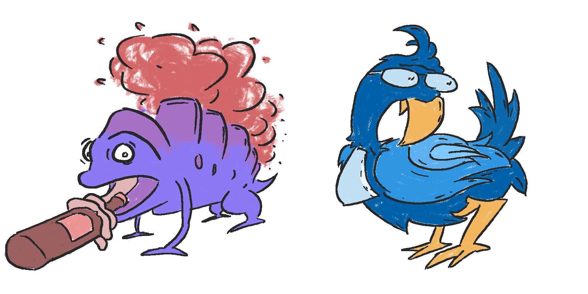
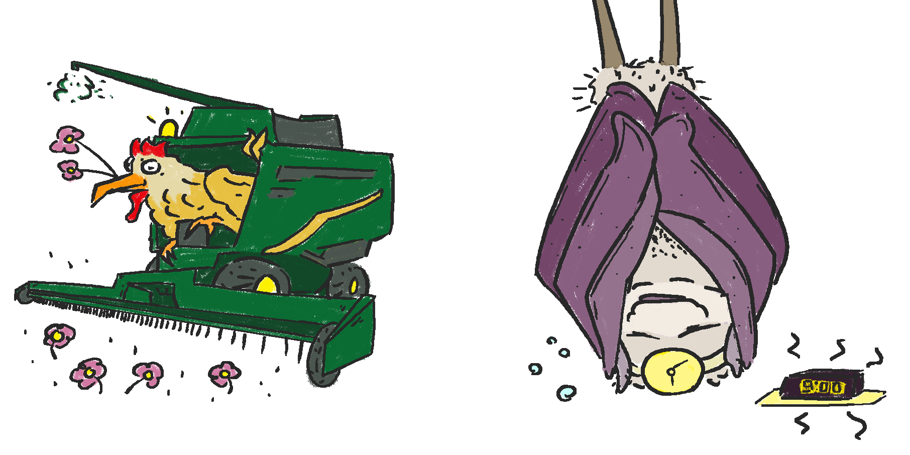
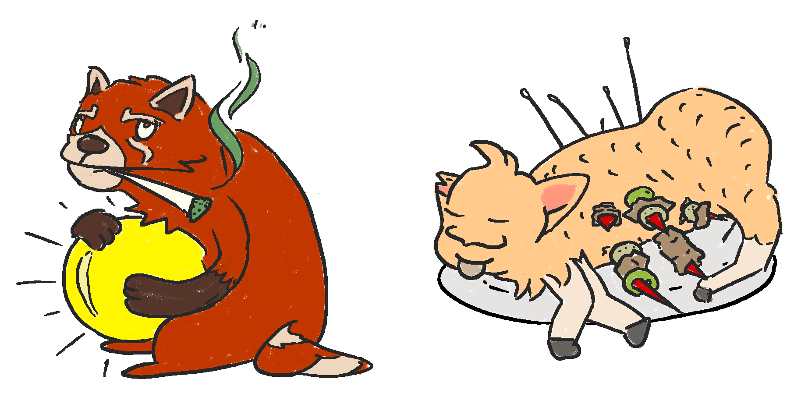
Board stickers ^
Illustrations of SV Liber's yearly board-mascots. These were printed on sticker paper and distributed to random people in the association so people can "collect them all"!
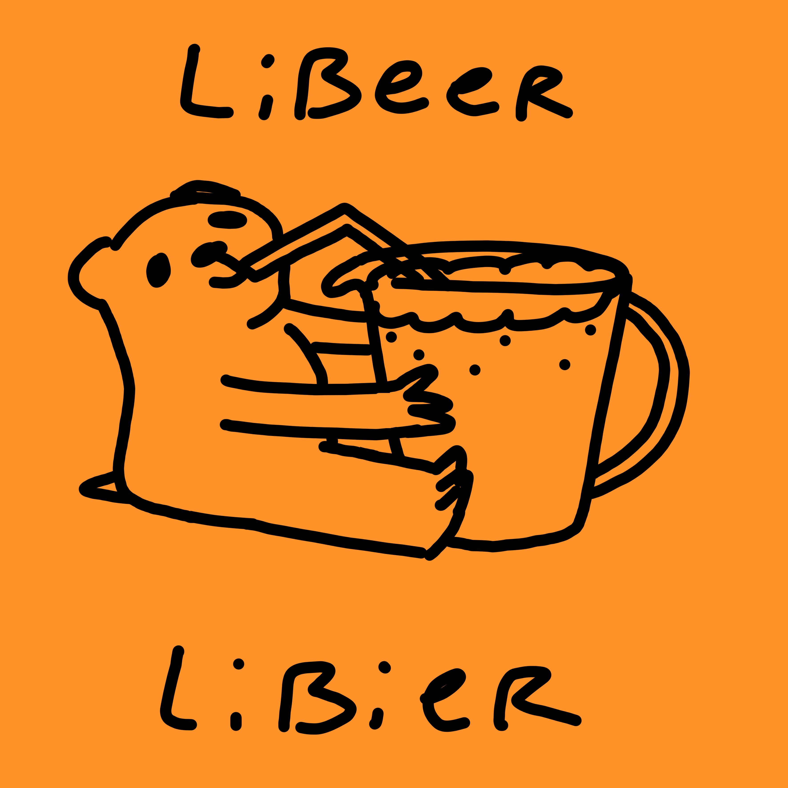
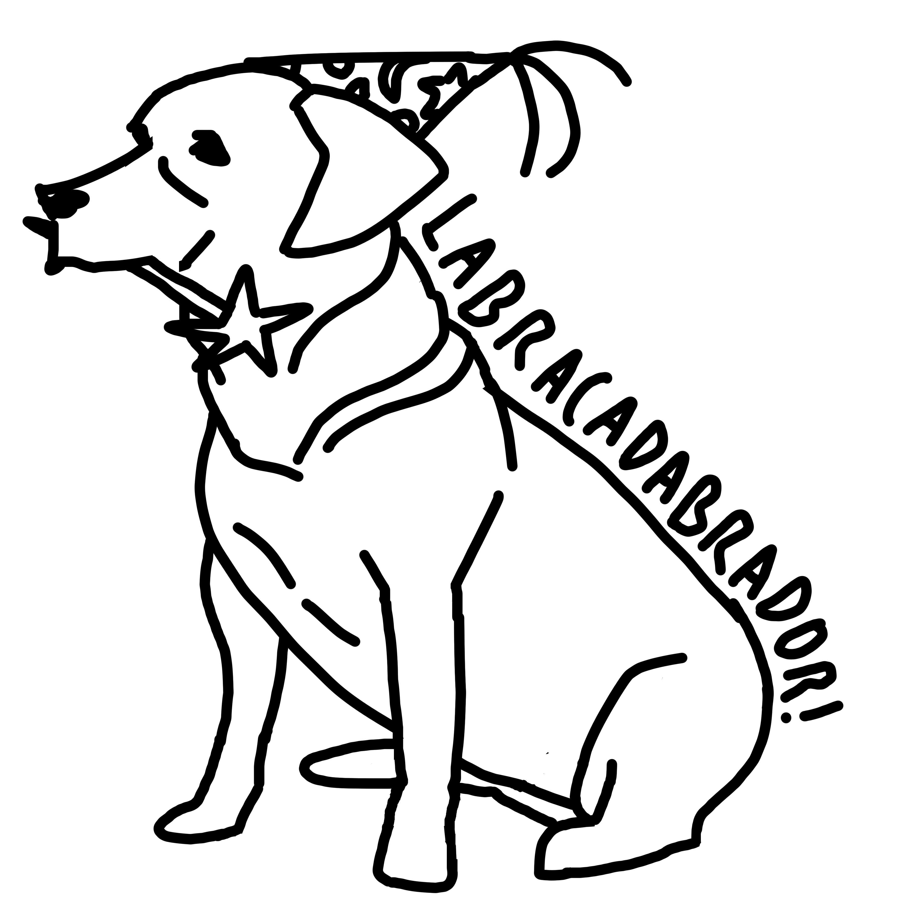
Libeer Libier, Labracadabrador ^
Two illustrations, of which the first was printed on sticker paper and the second on comfortable hoodies.
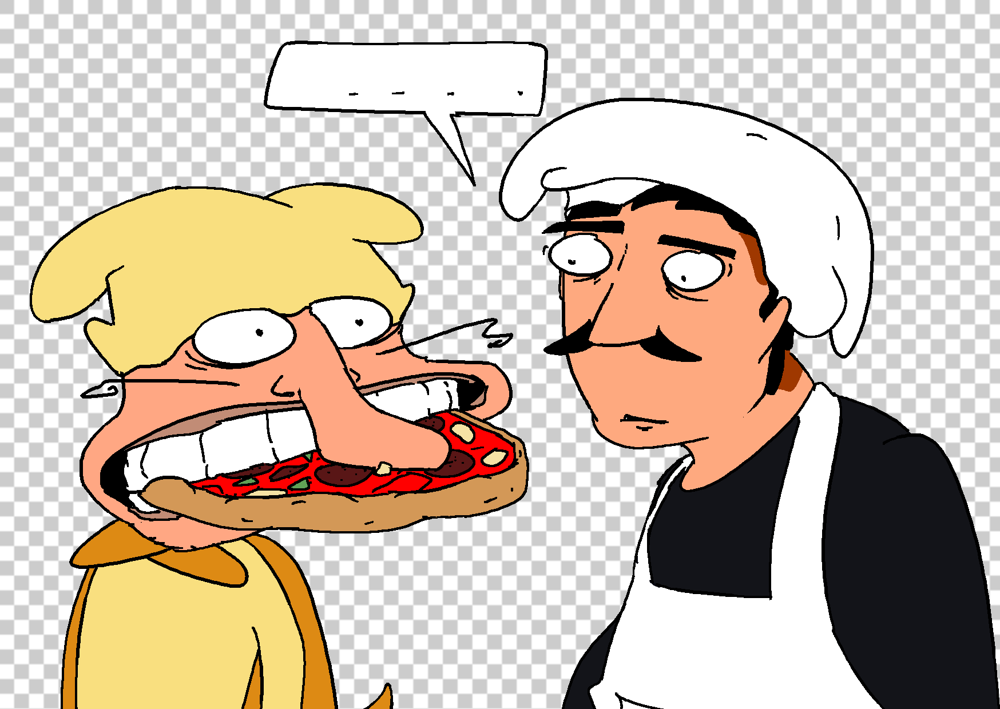
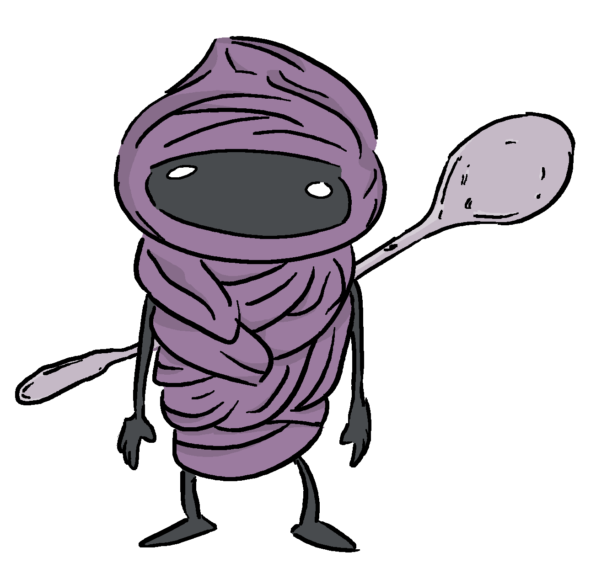
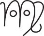
Simple "anthropomorphic" zodiac signs ^
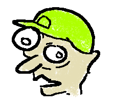
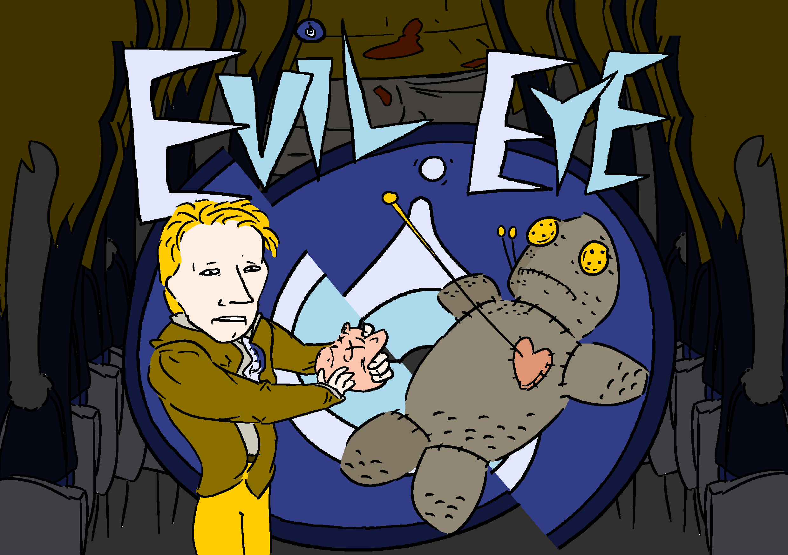
Illustration based on Joe Jackson's "The Evil Eye" (1980) ^
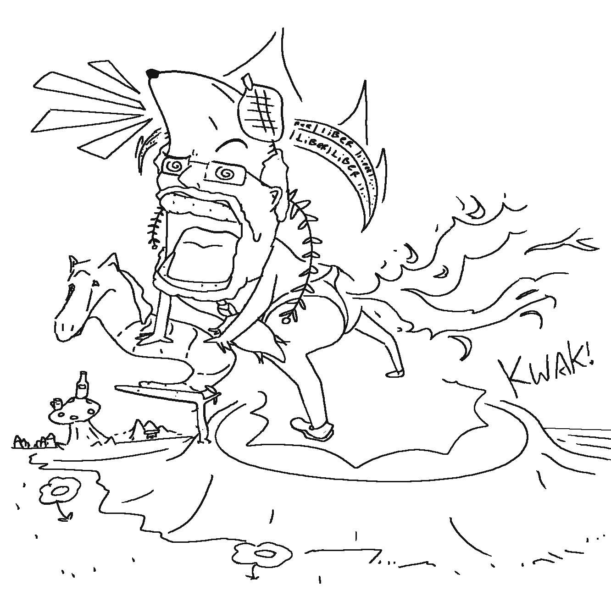
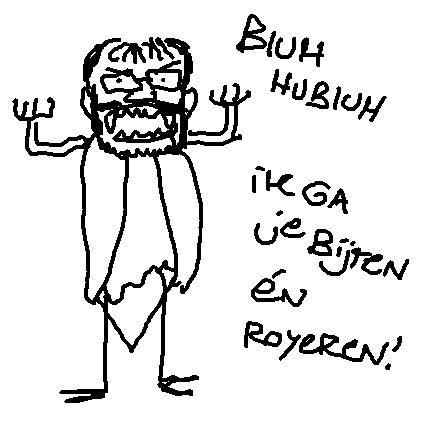
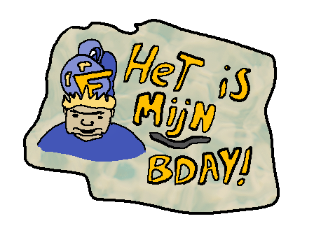

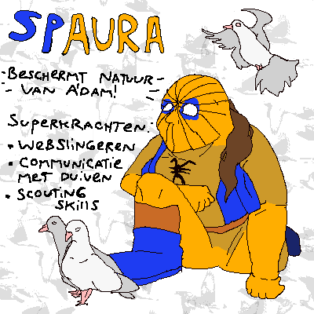

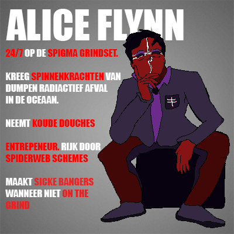